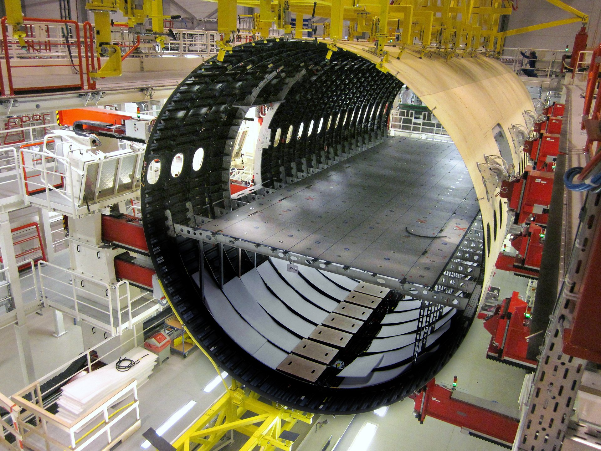

Fuselage
The fuselage is the main body of the airplane and one of its primary structures. It houses the cockpit, where the pilots control the aircraft; the cabin, where passengers sit; and cargo storage areas. The design considerations for the fuselage include its aerodynamic properties and structural integrity, which must support the weight of passengers, crew, and cargo, as well as withstand various stressors during flight.
